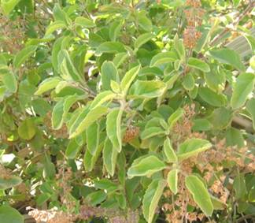
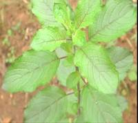
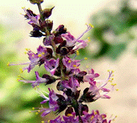
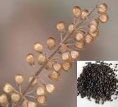
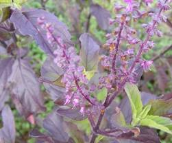
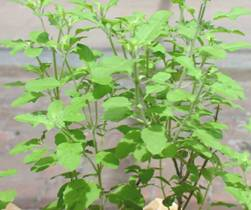
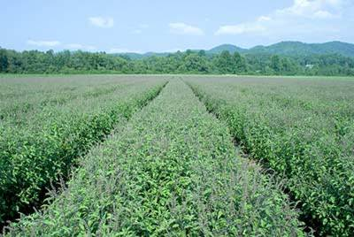

HORT 282 :: Lecture 24 :: SEEDS ACT AND RULES

OCIMUM
Plant Profile
Family : Lamiaceae: Labiatae
English name : Sacred Basi, Holy Basil
Indian name : Ajaka,Manjari (Sanskrit),Tulsi(Hindi),Thulasi (Tamil)
Species and : Ocimum sanctum Linn
Varieties : Sri Tulsi,Krishna Tulsi
Distribution : India,Andaman and Nicoobar Islands
Uses : Culinary purposes, Drugs, Flavoruing Insecticide, Perfumery.
 The ‘Sacred basil’ or ‘Holy basil’, Ocimum sanctum Linn. (2n=32) a biennial or triennial shrub belonging to the family Lamiaceae, is commonly cultivated in gardens: it is frequently found as an escape. The species is worshipped by the Hindus of India and traditionally grown in courtyards and temples. The leaves of this basil, on steam-distillation, yield a bright yellow, volatile oil possessing a pleasant odour characteristic of the plant, with an appreciable note of cloves.
The plant contains mainly phenols, aldehydes, tannina, saponin and fats. The essential oil components are eugenol (about 71%, eugenol methyl ether (20%),nerol caryophyllene, selinene, α-pinene, β-pinene,camphorcineole, linalool and carvacrol (3%).A terpeneurobsolic acid possessing anticancer properties has also been isolated. The seeds of this plant give a greenish-yellow fixed oil and also contain antistaphlocoagulase which can be extracted with water and alcohol.
The plant is also used as a pot herb: its leaves are used as a condiment in salads, and other dishes. The leaves, seed and root are medicinally useful. The leaves also contain ascorbic acid (82 mg 100 g) and carotene (2.5 mg/100 g). The juice of the leaves possesses diaphoretic, antiperiodic. Stimulating, expectorant and antipyretic properties: it is used in catarrh and bronchitis, applied to the skin in ringworm and other cutaneous diseases and as drops to relieve earache. An infusion of the leaves is used as a stomachic in gastric disorders of children. If taken internally, it strengthens the liver and heart and is a good appetizer. It cures amenorrhea and promotes the secretion of milk in lactating women. The leaves, if chewed, give relief from toothache. The leaf-juice is applied to reduce inflammations. A decoction of the root is given as a diaphoretic in malarial fevers. The dried and powdered root, if taken twice daily for seven days, cures spermatorrhoea.
The seeds are mucilaginous and demulcent and are given in disorders of the genitor-urinary system. The seeds rubbed in water are given for irritation coughs, gonorrhea, labour pains and dysentery. The seeds rubbed with cow’s milk are given for vomiting and diarrhea. The juice of the fresh leaves, flower-tops and the slender roots are considered to be good antidotes for snakebite and scorpion sting. Tribes (Sandals) use the plant in cholera, cough postnatal complaints, hemorrhagic septicemia and dog bite. The volatile oil is reported to possess antibacterial and insecticidal properties. It inhibits the in vitro growth of Mycobacterium tuberculosis and Micrococcus pyrognes var. aureus. It has marked insecticidal activity against mosquitoes.
Origin and Distribution
O. Sanctum has wide distributions, covering the entire Indian subcontinent, ascending up to 1,800 m in the Himalayas and as far as the Andaman and Nicobar Islands. This plant-occupies a wide range of habitats.
Description of the Plant
It is an erect, herbaceous, much-branched softly hairy, biennial or triennial plant, 30-75 cm high. The leaves are elliptic-oblong, acute or obtuse, entire or serrate, pubescent on both sides, minutely gland dotted. The flowers are purplish or crimson, in racemes, close-whorled. The nutlets are subglobose or broadly ellipsoid, slightly compressed, nearly smooth, pale-brown or reddish with small, black markings.
 Leaf |

Flower |
 Seed |
Types and Varieties
In India, two types of O.sanctum are under cultivation: the green type (Sri Tulsi) is the most common, the second type (Krishna Tulsi) bears purple leaves and is preferred in the trade for its higher potency of the drug.
Green Type Purple type

Soil
It thrives well on a variety of soils. Rich loam to poor laterite, saline and alkaline to moderately acidic soils are all well suited for its cultivation. Well-drained soils aid in better vegetative growth. Water-logged conditions can cause root-rot and result in stunted growth.
Climate
The plant can be grown under partially shaded conditions but it yields less oil. It flourishes well under fairly high rainfall and humid conditions. Long days and high temperatures have been found favourable for the plant growth and oil production. Tropical and subtropical climate (at altitudes up to 900 m) are suited for its cultivation. The plant is moderately tolerant to drought and frost.
Season
The nursery can be raised in the third week of February and transplanting is generally started in the middle of April. This can be undertaking in the month of March, if the seedlings are raised in beds.
Land Preparation
The land is brought to a fine tilth and laid out into plots of convenient sizes for irrigation. It is preferable to add 15t/ha of FYM during the preparation of the land.
Cultivation
Propagation
The plant is propagated by seeds. The seeds are likely to deteriorate in future generations on account of the highly cross-pollinated nature of the crop. Hence, for fresh plantings, the growers have to take fresh seeds from the pedigree stock.
Nursery raising
Raised seed-beds of 15’x4’x9’ size should be thoroughly prepared, by the addition on FYM. About 200-300 g seeds are enough to raise seedlings for planting one hectare of land. The seeds should be sown 2 cm deep in the nursery beds. After sowing the seeds in the nursery, a mixture of FYM and soil is thinly spread over the seeds and irrigated with a sprinkler hose. The seeds germinate in 8-12 days and the seedlings are ready for transplanting in about 6 weeks time, at the 4-5 leaf stage. A spray of 2% urea solution on the nursery plants 15 to 20 days before transplanting helps in raising very healthy plants for transplanting.
Transplanting
It is recommended to plant the seedlings at a distance of 40 cmx40 cm, 40 cmx50 cm and 50 cmx30 cm to get high herbage and oil-yield per hectare at Lucknow, New Delhi and Indore, respectively. The plots are irrigated immediately after transplanting. The seedlings will establish well by the time of the second irrigation. At the stage gap planting and replacement of the poor plants is done so that a uniform stand is achieved.
Field View

Fertilizer Application
The application of 120 kg/ha each of P2O5 and K2O is recommended for saline and alkaline soils at Lucknow. The optimum fertilizer dose recommended for this crop is 120 kg N and 60 kg P2O5/ha. Half the dose of N and the entire dose of P2O5 are given as a basal dose. Whereas, the remaining N is applied in two split doses, after the first and second cuttings. The application of the micronutrients Co and Mn at 50 and 100 ppm concentrations, respectively, is reported to increase the oil-yield significantly.
Irrigation
Irrigation depends upon the moisture content of the soil. In summer, 3 irrigations per month are necessary whereas, during the remaining period, it should be done as and when required, except in the rainy season when no irrigation is necessary. Altogether, about 12-15 irrigations years are sufficient.
Weeding
The first weeding is done one month after planting, and the second 4 weeks after the first. After this, no further weeding is required as the plants become bushy, thereby naturally suppressing the weeds.
Interculture
One hoeing, two months after planting, is sufficient. The crop may also be earthed-up at this stage.
Diseases and Pests
The plant is susceptible to powdery mildew caused by Oidium spp., seedling blight caused by Rhizoctonia solani and roor-rot caused by Rhizoctonia bataticola. Powdery mildew can be controlled by spraying wet table sulphur (4 g/I of water), and the latter two diseases are managed by improved phytosanitary measures and by drenching the nursery-beds with a solution of mercurial fungicide.
Among the insects, the larvae of leaf-rollers sticking to the under surface of the leaves fold them backwards lengthwise, thus webbing them. Malathion (0.2%) may be sprayed to control this insect.
Harvesting and Yield
The crop is harvested when it is in full bloom. The first harvest is obtained 90-95 days after planting. Afterwards, it may be harvested at every 65-75 days, intervals. Harvesting should be done on bright, sunny days in order to obtain good quality oil-yield. It is not desirable to harvest the crop if it has rained the previous day.
The crop should be cut 15-20 cm above ground-level. The harvested produce may be allowed to wilt in the field itself for 4-5 hours, to reduce the moisture content and the bulkiness.
About 5 t/ha of fresh herbage can be obtained twice or thrice a year.
Distillation of Oil
The harvested produce is usually distilled in its fresh form. However, the oil quality and yield do not diminish up to 6-8 hours after harvest, buy any further delay may cause considerable loss in yield and quality of oil. Steam-distillation is found to be superior to water distillation. The whole herb contains 0.1 to 0.23% essential oil. The yield of oil varies with the type, season and place of origin. The oil-yield will be approximately 10-23 kg/ha.
***************
- What are the major constituents in ocimum oils?
- Genus ocimum contains _________ species
- Genus ocimum can be broadly divided into 2 groups __________
- What is the oil recovery percentage in ocimum sp.
- Seed rate for ocimum sp is _____________
| Download this lecture as PDF here |